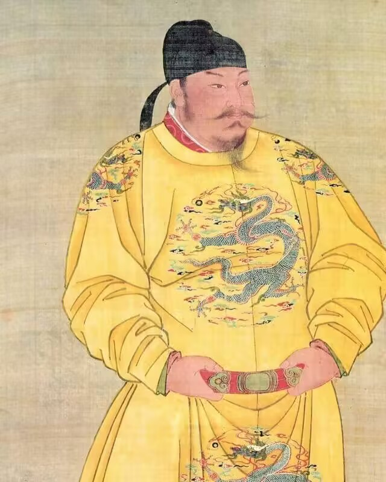
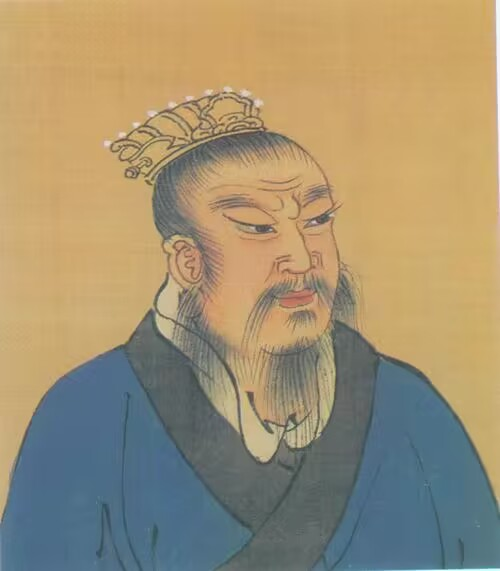
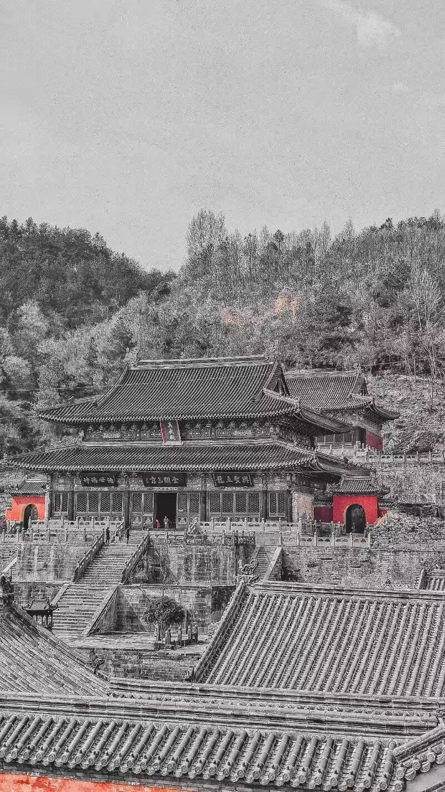
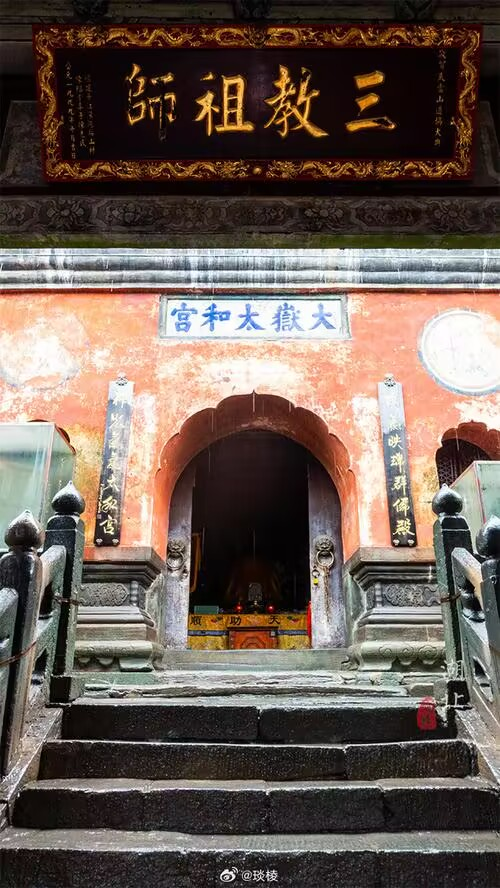
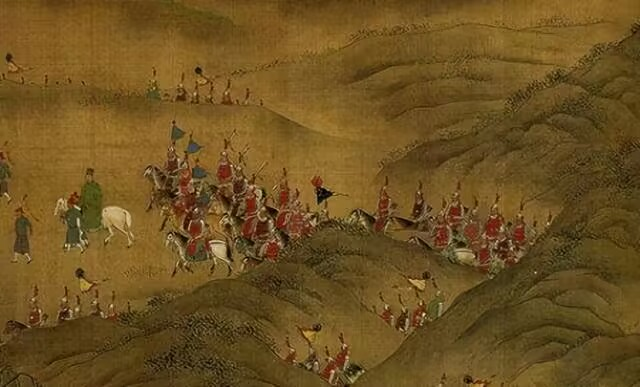
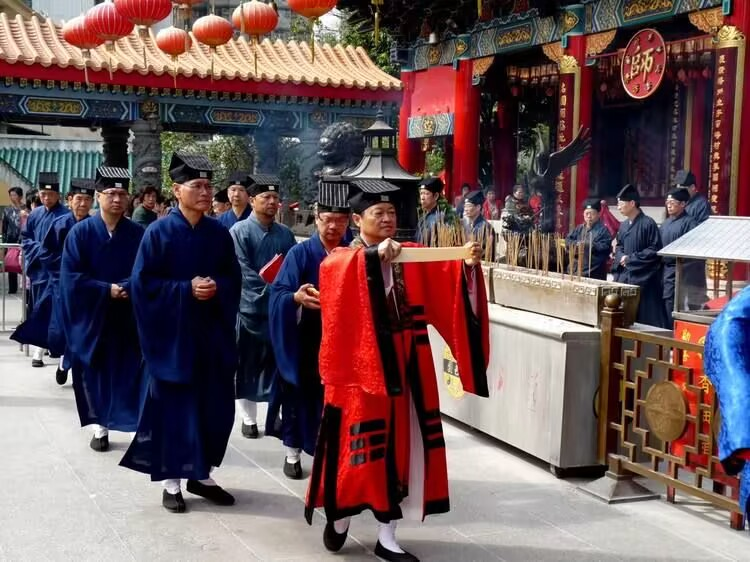

|  | 返回首页 汉高祖五年（前202年），置武当县。 汉末至魏晋隋唐时期，是求仙学道者的栖隐之地。 唐贞观年间（627—649年），唐太宗诏武当节度使姚简到武当山祈雨而应。敕建“五龙祠”。 乾宁年间（896—897年），武当山列为“七十二福地”第九位。 自唐代后，武当山就得到历代封建皇帝的重视，封号武当，使其地位崇高、名声显赫。 元代至元二十二年（1285年），玄教宗师张留孙向世祖忽必烈奏报武当山后，忽必烈大信其道。大德八年（1304年），元成宗封“武当福地”。 明代永乐十年（1412年），成祖朱棣命隆平侯张信、驸马都尉沐昕、工部右侍郎郭琎、礼部尚书金纯等率军民、工匠30余万人，大修武当山。10 查看更多 6 武当山 永乐十五年（1417年）封为“大岳”，高于五岳之上。 永乐二十一年（1423年），历时12年，敕建的大岳太和山，建成9宫、8观、36庵堂、72岩庙、39桥、12亭等33座建筑群。史称“北建故宫，南修武当”。 嘉靖三十一年（1552年）封为“治世玄岳”，把武当山尊为至高无上的“皇室家庙”，以“四大名山皆拱揖，五方仙岳共朝宗”的“五岳之冠”的显赫地位标名于世，被列为道教第一名山。嘉靖三十一年（1552年），世宗令工部右侍郎陆杰提督重修武当山宫观。 |
|---|---|
|  | |
|  | 武当山的故事 朱元璋年轻的时候，曾经到武当山烧香，返回途中遇到滁州人陈也先在武当山下设擂台。朱元璋上台，三拳两脚，把陈也先打到台下。 陈也先不服气，就带领几百人，追赶朱元璋。朱元璋的好朋友徐达、汤和、邓愈等人，为朱元璋拼死抵挡，把陈也先的手下抵挡住了。朱元璋就跑到了武当山下一个叫草殿的地方，在殿后面睡觉，这时他听到很多人进到这个殿里。其中有陈也先的声音，他想要是再跑的话，又会被发现，于是他一把火把这个殿烧了。 朱元璋在回家的路上，武当山的玄天上帝给他托梦，说你为什么把我的殿给烧了。朱元璋也觉得自己不该烧这个殿，但是为了躲避追兵，也没有办法。他说将来天下太平了，我赔偿给你一个金殿。 从一些历史记载中我们也可以发现朱元璋的家庭与道教有着密切的关系。朱元璋的祖父是一个农民，信奉道教，传说有一天他在村口杨家墩的一个地窝里睡觉，听到两个道士的谈话，一个说这个地方风水很好，要是有人埋在这里，儿孙将来要出天子。另一个不信，于是打赌。第一个道士说，我在这个地方插一个柳树枝，明天发芽了我赢。朱元璋的爷爷听到了，第二天一大早，就跑去一看，柳树枝果然发出了新芽。他把发芽的柳树枝拿走，换了一根枯树枝插在那里。后来他交代自己死后就要葬在那个地方。 这也可能是朱元璋为了说明他是真命天子，用道士看风水这个故事来演绎君权神授。朱元璋家里很穷，他不可能请道士看风水，用偷听到的事情，来诠释他是真命天子。 不仅是朱元璋的祖父信道教，他母亲，他外公都非常信奉道教。朱元璋的外公在当地是一个有法术的道士，据说有一次被元兵抓到海上去了，天上狂风暴雨，海浪翻滚，他站在船上作法，风暴很快就平息了。还有一个传说是朱元璋的母亲在怀朱元璋的时候，经常做一些很奇怪的梦。朱元璋出生的前一天，他母亲在麦场上睡着了，梦见有一个道士从西北边走过来，这个道士穿着红色的道袍，留着很长的胡子，头上还戴着冠，手里拿着一个白色的药丸。道士说这是金丹大药，给了朱陈氏一颗，朱陈氏把它吞到口中。这都是梦中的事，但是醒了以后，就感觉到满口余香，经宿不散，整天晚上嘴巴里面都有一股香味，不停的弥漫。第二天朱元璋就出生了。而且出生的时候是红光满天，不少人以为那个地方失火了。因为朱元璋后来是明朝的皇帝，日月代表光明。 朱元璋起兵打仗，投靠的是在濠州一带很有名的起义军郭子兴，他在郭子兴部下提拔很快，郭子兴还把自己的养女马氏嫁给了朱元璋，就是后来的马皇后。郭子兴死了之后，朱元璋到了南京，建立的是吴国，称吴国公。这时朱元璋面临的最大威胁不是北方的元朝，而是陈友谅的部队。这时陈友谅建立了一个新的藩国叫“汉”。并在九江建造大军舰，准备从长江中游向南京进攻。陈友谅这种野心，使他非常难受，他决定首先对付陈友谅。 公元1361年前后，朱元璋发动大军西征九江。陈友谅当时的势力非常强大，结果如何朱元璋心里也没有数。刚好战船准备出发的时候，有几万只乌鸦围绕着这个船的桅杆不停地转，士兵非常害怕，人心开始骚动。因为在中国人的习俗中乌鸦是和死亡联系在一起的。这个时候朱元璋讲话了，说这个乌鸦不代表死亡，而是武当山玄天上帝的乌鸦神兵，乌鸦往这儿飞就意味着，玄天上帝要支持我吴国打败汉国。船队航进的途中，在旗舰的船舵上发现了龟蛇，这也被解释成武当山真武神保佑朱元璋军队的一种信号，一种信息。 朱元璋向西进伐的过程当中，一路攻城掠地，占领了不少地方。最终双方的决战是在鄱阳湖展开。鄱阳湖之战当中也发生了很奇怪的事，一次朱元璋的旗舰眼看就要被陈友谅弟弟的战船赶上了，朱元璋的战船却搁浅在湖边上，焦急万分的时刻一阵大风，桅杆刚好扯满了风帆，船向前划动，逃脱了追击。后来朱元璋取得了鄱阳湖之战的决定性胜利。 战争当中有利的风势、火势，包括电闪雷鸣，都被解释成为武当山玄天上帝保佑朱元璋的一种征兆，一种显应。 朱元璋取得了南征北战的胜利，最后定都南京。他在南京祭祀的一共有九个神，其中放在第一位就是真武神，就是武当山的玄天上帝。 朱元璋除了我们所说的认为自己在打仗的过程当中，得到玄天上帝保佑之外，在他当皇帝以后，对武当山的道士，也格外的重视。明朝初年有很多人，不愿意给朱元璋当官，朱元璋就从民间征集那些有才华的人到朝廷任职。武当山全真派一个道士丘玄清修复五龙宫，宣扬武当道教的举动，受到官府的重视。后来就被推荐到朝廷，朱元璋破格提拔，任命他为江西监察御史。当了几年以后，进南京面见朱元璋，朱元璋说这个道士，非常有修养，也很有文化，生活也很严谨，于是又任命他做太常寺卿，一下子由五品官提拔为三品官，成为当时朝廷的九卿之一，专门负责朝廷祭祀天地的礼仪。丘玄清从武当山五龙宫调了很多道士，到南京的神乐观当乐武神，就是专门负责祭祀天地时奏乐、唱诗。 每次祭祀天地的时候，朱元璋要住在斋宫里面，斋戒沐浴三天。丘玄清就跟朱元璋谈道教的典籍，武当山的名人、神奇等等。 朱元璋从丘玄清这儿知道张三丰。洪武二十三年的时候，朱元璋的第十八个儿子，襄王朱柏到武当山进香，非常想找张三丰见一面，结果张三丰不见。襄王朱柏非常沮丧，写了一首诗：“张玄玄，爱神仙。朝饮九渡之清流，暮宿南岩之紫烟。好山劫来知几载，不与景物同推迁。我向空山寻不见，徒凄然!孤庐空寂大松里，独有老弥松下眠”。 |
|  |